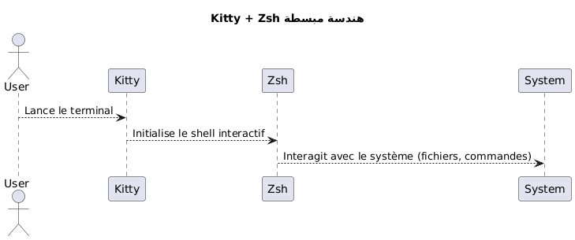
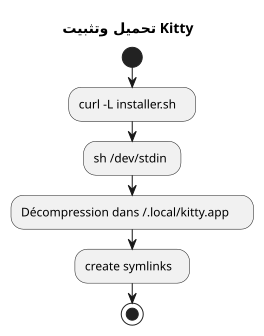
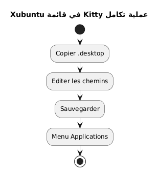
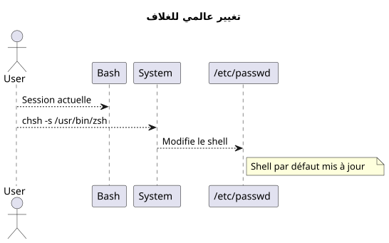
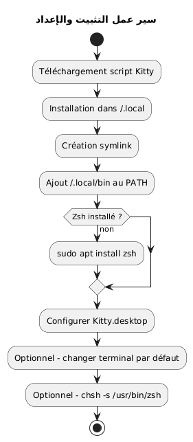
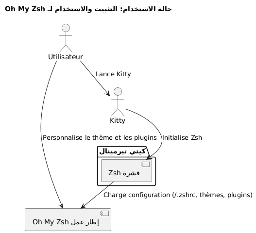
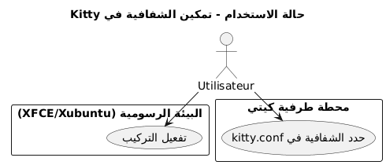
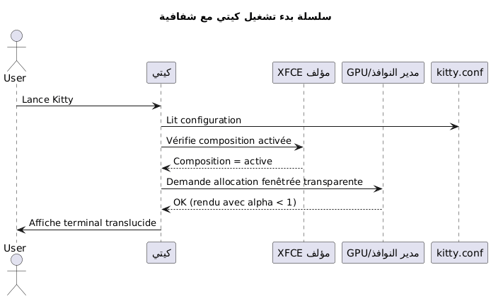

قم بتثبيت Terminal Kitty وتكوين Zsh كقشرة افتراضية في Xubuntu
Publié le 07 May 2026 Mis à jour le 2026-05-07
يشرح هذا الدليل خطوة بخطوة كيفية تثبيت محطّة kitty على Xubuntu، وضبطها بشكل صحيح، واستبدال bash بـ zsh كغلاف افتراضي. يتوفر مشروع kitty هنا: https://github.com/kovidgoyal/kitty.
_ Kitty محطة طرفية حديثة، سريعة وقابلة للتخصيص، مناسبة بشكل خاص للمطورين المتطلبين _
لماذا تختار Kitty و Zsh؟
تميز كيتى بـ :
-
أداء فائق بفضل تسريع GPU،
-
إعدادًا بالكامل مبني على ملف نصي único,
-
دعم ممتاز للخطوط وال ligatures
زِش هو غلاف تفاعلي قوي يقدّم :
-
إكمال ذكي،
-
مُحفّز قابل للتخصيص,
-
توافق كبير مع bash.
من خلال الجمع بين Kitty وZsh، تستفيد من بيئة عمل منتجة وجمالية.

|
هذا الدليل مقتصر عمدًا على التثبيت عبر البرنامج النصي وعلى Xubuntu. |
متطلبات النظام
قبل البدء، تأكد من أن لديك :
-
تم تثبيت Xubuntu،
-
وصول إلى الإنترنت,
-
قشرة/bash فعّالة لتشغيل البرنامج النصي.
تحقق من بيئتك :
uname -a
lsb_release -aتحميل وتثبيت Kitty
Kitty يوصي بتثبيته عبر نص برمجي رسمي يضع الملفات في`~/.local/kitty.app`.
|
هذه الطريقة مستقلة عن مديري الحزم (بدون`apt`). |
تحميل سكريبت التثبيت
نفذ الأمر التالي:
curl -L https://sw.kovidgoyal.net/kitty/installer.sh | sh /dev/stdinهذه الأوامر تنفذ :
-
تحميل الثنائيات،
-
استخراج في`~/.local/kitty.app`,
-
إنشاء الروابط الرمزية.

إنشاء الروابط الرمزية
من أجل أن يتمكن من استدعاء`kitty`من الطرفية، أنشئ رابطًا رمزيًا :
ln -s ~/.local/kitty.app/bin/kitty ~/.local/bin/kittyأضيفوا`~/.local/bin`إلى متغير PATH الخاص بك إذا لم يتم ذلك بالفعل :
echo 'export PATH="$HOME/.local/bin:$PATH"' >> ~/.zshrc
source ~/.zshrcيمكنك التحقق من التثبيت :
kitty --versionتكامل كيتي في Xubuntu
كي تظهر كيتي في قائمة التطبيقات :
نسخ ملف سطح المكتب
انسخ الملف`.desktop`مُقدم :
cp ~/.local/kitty.app/share/applications/kitty.desktop ~/.local/share/applications/عدّل ملف سطح المكتب
عدل الملف :
nano ~/.local/share/applications/kitty.desktopتحقق أو عدل الأسطر التالية :
[Desktop Entry]
Version=1.0
Type=Application
Name=Kitty Terminal
Comment=Fast GPU-based terminal emulator
Exec=/home/$USER/.local/kitty.app/bin/kitty
Icon=kitty
Categories=System;TerminalEmulator;استبدل`YOURUSER`باسم المستخدم.

اربط Kitty كطرفية افتراضية (اختياري)
لكي يصبح Kitty هو المحطة الطرفية التي تُطلق افتراضيًا :
sudo update-alternatives --install /usr/bin/x-terminal-emulator x-terminal-emulator ~/.local/kitty.app/bin/kitty 50
sudo update-alternatives --config x-terminal-emulatorاختر`kitty`في القائمة المقترحة
تثبيت Zsh
إذا لم يتم تثبيت Zsh بعد، نفّذ :
sudo apt install zshتحقق من التثبيت :
zsh --versionتعيين Zsh كقشرة افتراضية
يمكنك تغيير غلافك بشكل عام أو فقط في Kitty.
الطريقة الشاملة (لكل المحطات)
حدد المسار المطلق :
which zshبشكل عام`/usr/bin/zsh`.
غير القشرة الافتراضية :
chsh -s /usr/bin/zshقم بتسجيل الخروج ثم تسجيل الدخول مرة أخرى.

طريقة محددة لـ Kitty
إذا كنت تفضل فقط تغيير القشرة في Kitty، حرّر ملف الإعدادات :
nano ~/.config/kitty/kitty.confأضف هذا السطر :
shell zshاحفظ وأعد تشغيل Kitty.
إعداد Zsh (اختياري)
لتخصيص Zsh الخاص بك:
أنشئ ملف .zshrc
touch ~/.zshrc
nano ~/.zshrcمثال للحد الأدنى للتكوين
export ZSH_THEME="robbyrussell"
export PATH="$HOME/.local/bin:$PATH"
alias ll="ls -la"ملخص سير العمل الكامل
المخطط أدناه يلخص العملية بالكامل:

التحقق النهائي
شغل كيتي :
kittyيجب أن ترى أن`zsh`هو نشط :
echo $SHELLالنتيجة المتوقعة :
/usr/bin/zsh
لتعديل حجم الخط فيكيتي، يجب تعديل المعلمة`font_size`في ملف التكوين. إليك الإجراء التفصيلي:
�📂 افتح ملف التكوين
ملف التكوين الرئيسي يقع عادةً في :
~/.config/kitty/kitty.confإذا لم يكن هذا الملف موجودًا بعد، يمكنك إنشاؤه. مثال :
nano ~/.config/kitty/kitty.conf🖋️ إضافة أو تعديل `font_size
أضف التوجيه التالي، أو عدّله إذا كان موجودًا بالفعل:
font_size 14.0هنا`14.0`correspond à la taille souhaitée. Vous pouvez mettre n’importe quelle valeur décimale, par exemple`12.0`, 15.5, هكذا
�💾 احفظ وأعد تشغيل Kitty
-
احفظ (
Ctrl + O, ثم`Entrée`) اخرجوا (Ctrl + X) إذا كنت تستخدم`nano`. -
أغلق جميع نوافذ Kitty، ثم أعد تشغيل الطرفية لتطبيق التغيير.
�✅ ضبط ديناميكي (تكبير مؤقت)
إذا كنت تريد التكبير/التصغير مؤقتًا دون تعديل الإعدادات، استخدم اختصارات لوحة المفاتيح الافتراضية:
-
زيادة حجم الخط :
Ctrl + Shift + =
-
تقليل حجم الخط:
Ctrl + Shift + -
-
إعادة تعيين الحجم:
Ctrl + Shift + Backspace
هذه الإعدادات لا تستمر بعد إغلاق الطرفية.
التثبيت والإعداد لـ Oh My Zsh
بمجرد تثبيت Zsh وتعيينه ك shell الافتراضي، يمكنك إثراء بيئتك مع Oh My Zsh، وهو إطار عمل لإدارة تكوين Zsh، يوفر :
-
مجموعة من المواضيع للـ prompt,
-
العديد من الإضافات،
-
تنظيم واضح للتكوين
تثبيت Oh My Zsh
تأكد أن Zsh نشط :
zsh --versionإذا لزم الأمر، ابدأ
zshثم قم بتنزيل وتشغيل نص التثبيت الرسمي :
sh -c "$(curl -fsSL https://raw.githubusercontent.com/ohmyzsh/ohmyzsh/master/tools/install.sh)"هذا السكريبت :
-
أنشئ المجلد`~/.oh-my-zsh`,
-
احفظ ملفك أحيانًا`~/.zshrc`,
-
يفعل تلقائي الprompt الجديد
تغيير السمة
افتح ملف التكوين الخاص بك :
nano ~/.zshrcعدّل المتغير`ZSH_THEME`لاختيار موضوع آخر (على سبيل المثال`agnoster`) :
ZSH_THEME="agnoster
احفظ ثم أعد تحميل الإعدادات :
source ~/.zshrcالتحقق
أطلق Kitty وتأكد أن المُحث قد تغير بشكل صحيح. يمكنك التأكد من أن Oh My Zsh نشط عن طريق التنفيذ :
echo $ZSHيجب أن تكون النتيجة مشابهة ل:
/home/مستخدِمك/.oh-my-zsh
مخطط حالة الاستخدام

تفعيل الشفافية في Kitty
من أكثر الميزات قيمةً في Kitty هي إمكانية إضافة الشفافية إلى خلفية الطرفيه. هذا يسمح برؤية البيئة الأساسية بشكل خفيف (النافذة، المكتب، إلخ)، وهو مفيد بشكل خاص أثناء القيام بمهام متعددة.
المتطلبات المسبقة للشفافية
الشفافية في Kitty تقوم على الـمُصمم النوافذيستخدم بواسطة البيئة الرسومية في أوبونتو إكس (المبني على XFCE)، تأكد من أنالتكوين مفعَّل.
-
انقر بزر الماوس الأيمن على سطح المكتب > الإعدادات >إعدادات مدير النوافذ,
-
علامة تبويبملحن: خانة \"تفعيل التكوين\" يجب أن تُحدد.

إعداد الشفافية في kitty.conf
افتح ملف التكوين الخاص بك`~/.config/kitty/kitty.conf`: (español)
nano ~/.config/kitty/kitty.confأضف أو عدل الأسطر التالية :
background_opacity 0.85هذا المعامل يقبل القيم بين :
-
1.0→ غير شفاف (لا شفافية), -
0.0→ شفاف تمامًا (غير قابل للاستخدام), -
القيم المتوسطة مثل`0.90`,
0.75, إلخ
عادةً ما يكون التوافق البصري الجيد بين`0.85` et 0.95.
إعادة تشغيل Kitty
أغلق جميع مثيلات Kitty، ثم أعد تشغيل نافذة جديدة لتسري التعديلات:
kittyمكملات ممكنة
إذا كنت تستخدم خلفية طرفية مخصصة، يمكنك أيضًا تحديد لون خلفية مع شفافية (باستخدام RGBA):
background #1e1e2effالمكون الأخير (ff) يشير إلى العتامة (de`00` à ff).
مخطط التسلسل - تهيئة Kitty مع الشفافية

القيود المعروفة
|
الشفافية لا تعمل إذا : - مُعطَّل مُكوّن XFCE, - يتم استخدام مدير نوافذ غير متوافق, - أنت تستخدم Kitty في وضع tmux في الخلفية دون دعم للشفافية. |
تعطيل الجرس السمعي (audible bell)
افتراضيًا، يصدر Kitty صوت bip عندما تُدخل أمرًا خاطئًا أو عندما يحفّز حدث طرفية ذلك. يمكن لهذا الضجيج أن يصبح مزعجًا بسرعة، خاصةً في بيئة تطوير مكثفة.
لإلغاء هذا السلوك، أضف التوجيه التالي إلى الملف`~/.config/kitty/kitty.conf`:
audible_bell no|
يمكنك أيضًا تفعيل رد فعل بصري بديلاً للصوت التنبيهي مع: |
تحديث Kitty
نظرًا لأن Kitty مثبت عبر سكريبت وليس عبر مدير حزم، يتم التحديث عن طريق إعادة تشغيل سكريبت التثبيت الرسمي. يتيح ذلك تنزيل آخر نسخة وتحديث تثبيتك الحالي في`~/.local/kitty.app`.
|
اللاحق`.app`في الطريق`~/.local/kitty.app`هي اتفاقية تثبيت Kitty على Linux عبر سكريبته الرسمي، ولا تشير بأي حال إلى توافق حصري مع macOS. |
|
قبل تشغيل أمر التحديث، تأكد من أنك في المجلد الشخصي الخاص بك ( |
نفّذ الأمر التالي من دليل منزلك :
curl -L https://sw.kovidgoyal.net/kitty/installer.sh | sh /dev/stdinهذا السيناريو سيتولى:
-
تنزيل ثنائيات الإصدار الجديد.
-
استخراج الملفات في`~/.local/kitty.app`.
-
تحديث الروابط الرمزية إذا لزم الأمر.
بعد التحديث، يوصى بإغلاق جميعInstances من Kitty وإعادة تشغيلها للتأكد من أن النسخة الجديدة تم احتسابها.
المراجع
إذا كنت ترغب في تعميق التخصيص، راجع الوثائق الرسمية:
-
Kitty : https://sw.kovidgoyal.net/kitty/
-
https://sw.kovidgoyal.net/kitty/conf/#opt-kitty.background_opacity
-
https://sw.kovidgoyal.net/kitty/conf/#opt-kitty.audible_bell
-
زش : `https://zsh.sourceforge.io/
-
جيت هاب: https://github.com/kovidgoyal/kitty
خاتمة
لديك الآن :
-
من طرفية حديثة وفعّالة (Kitty)
-
قشرة قوية وقابلة للتخصيص (Zsh)
-
تكوين نظيف ومستقل عن حزم النظام
-
من طرفية جمالية ووظيفية مجهزة بـ Oh My Zsh